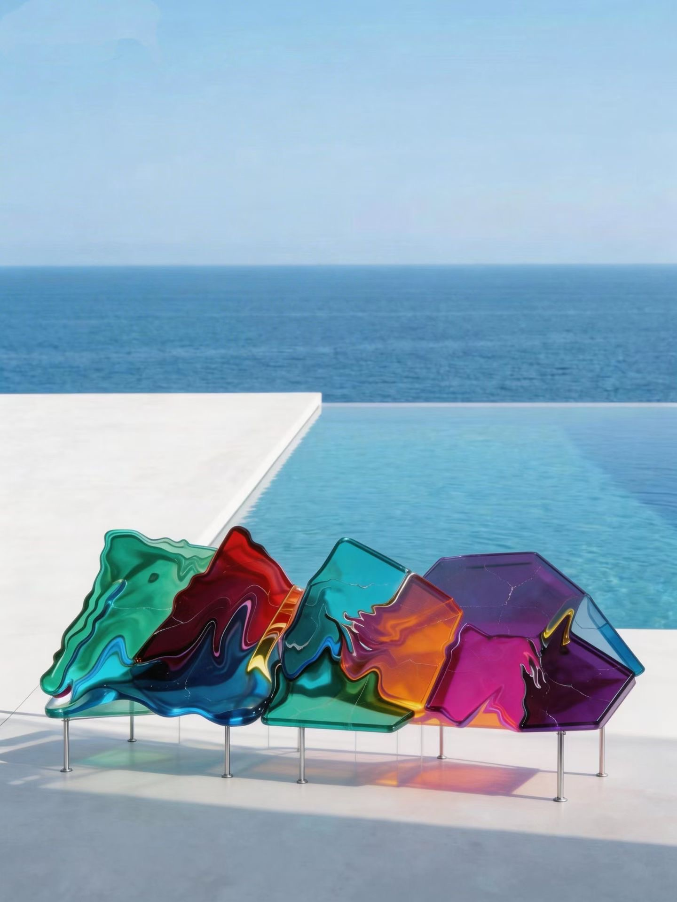
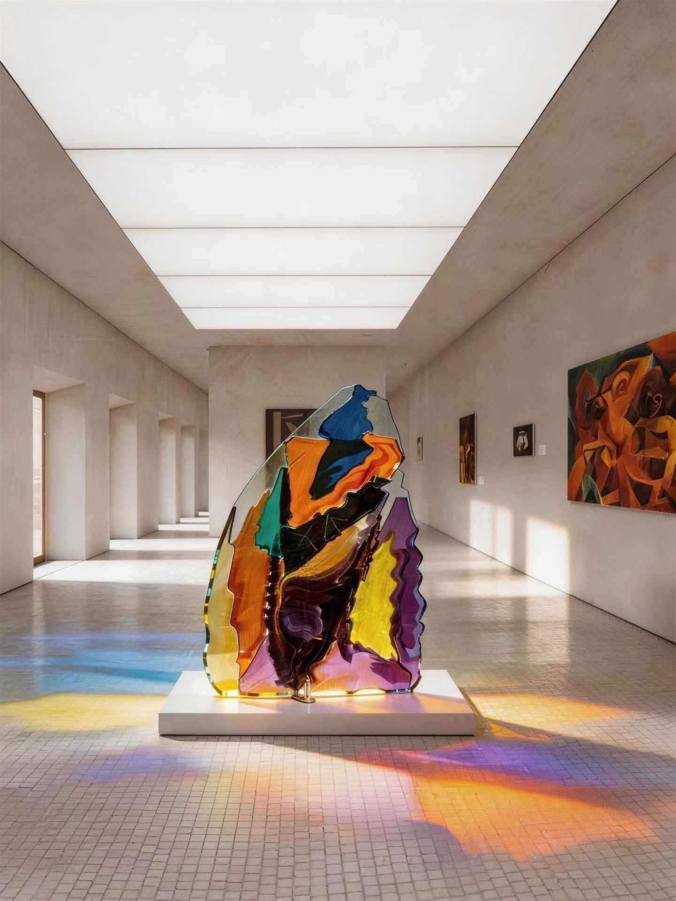

2026 · AI生成数字图像 · 数字影像 / AI-generated digital images · moving image
《强制对位》始于一组手绘稿。我画下一些无法真正立起来的结构——互相排斥的板块被强行并置，结构从内部穿插。随后我用 AI 把这些手稿转化为图像，让它们在不可能的空间里成立。
生成过程中出现的光线错位、悬空的支撑、接不上的缝，是AI本身带有的印记，也是这组作品的主题本身：当不相容的东西被强制对齐，缝隙就是唯一真实的东西。
《强制对位》这系列作品最初源于一种直觉：人与人的关系就像拼图——相互融合，也相互碰撞、冲突。不相容的形状被强行拼合，缝隙中留下的，才是关系最真实的样子。我将手绘稿转为AI图像，随后进行AI视频制作和配乐。
Forced Alignment began as a set of hand-drawn studies. I drew structures that could never actually stand — mutually repelling panels forced together, structures interpenetrating from within. I then used AI to translate those drawings into images, letting them hold together in an impossible space.
The misaligned light, the unsupported mass, the seam that doesn't close — these are AI's own imprints, and they are the subject: when incompatible things are forced into alignment, the gap is the only thing that is true.
The series Forced Alignment began with an intuition: relationships between people are like puzzle pieces — they merge into each other, but they also collide and conflict. When incompatible shapes are forced to fit together, what remains in the gap is the truest form of the relationship. I translated my hand-drawn studies into AI images, then produced AI videos and their soundtracks.

《拼图的余数》
2026
AI生成数字图像（源自手绘稿）
版数 1/5 + 2AP ｜ 尺寸可变
Forced Alignment — The Remainder of the Puzzle
2026
AI-generated digital image (from a hand-drawn study)
Edition 1/5 + 2AP | Variable dimensions
AI生成数字图像

《密集的孤岛》
2026
AI生成数字图像（源自手绘稿）
版数 1/5 + 2AP ｜ 尺寸可变
Forced Alignment — Dense Islets
2026
AI-generated digital image (from a hand-drawn study)
Edition 1/5 + 2AP | Variable dimensions
AI生成数字图像
《缝隙的尺度》
2026
AI生成数字影像（源自手绘稿）
版数 1/5 + 2AP ｜ 时长 00:10
Forced Alignment — The Scale of Gaps
2026
AI-generated moving image (from a hand-drawn study)
Edition 1/5 + 2AP | 00:10
AI生成数字影像
《垂直的内应力》
2026
AI生成数字影像（源自手绘稿）
版数 1/5 + 2AP ｜ 时长 00:05
Forced Alignment — Vertical Internal Stress
2026
AI-generated moving image (from a hand-drawn study)
Edition 1/5 + 2AP | 00:05
AI生成数字影像